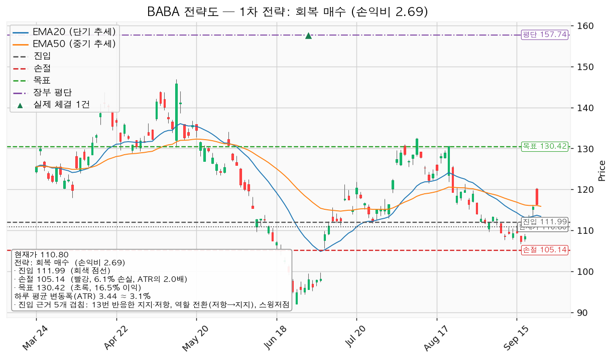
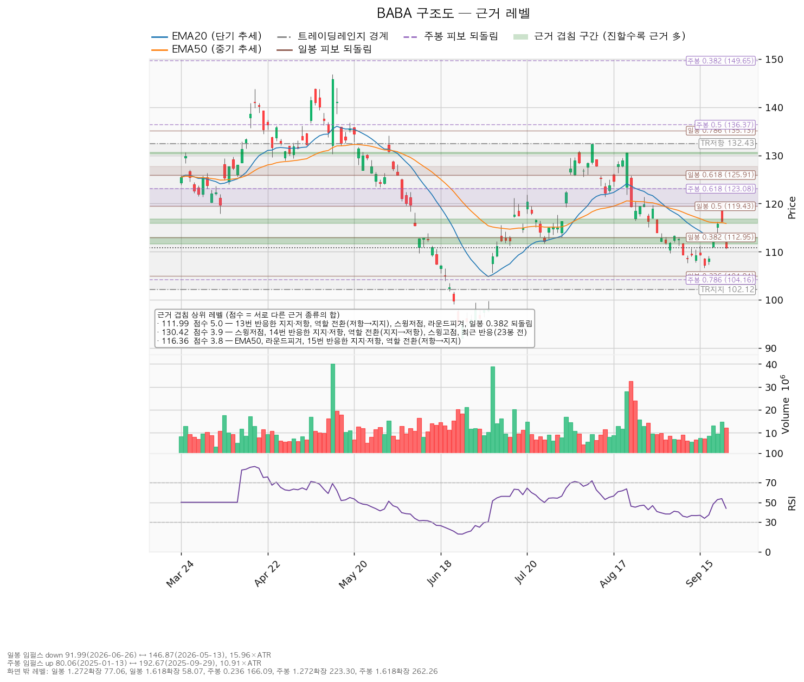
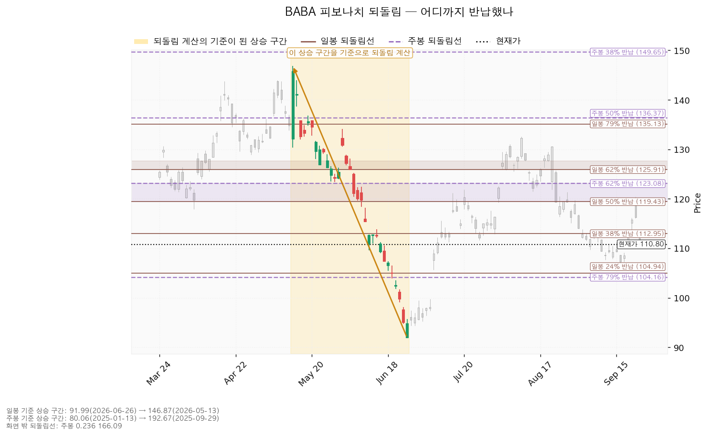
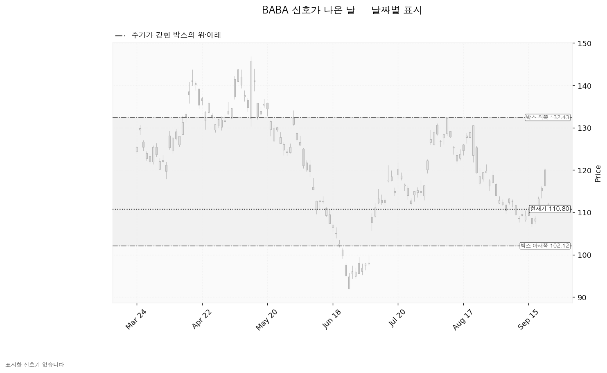

알리바바(BABA)는 중국의 전자상거래 플랫폼(타오바오·티몰·알리익스프레스)과 클라우드 컴퓨팅, 물류·디지털 결제 사업을 운영하는 기업입니다. 미국 증시에는 주식예탁증서(ADR) 형태로 상장돼 있습니다.
기준은 9월 23일 종가 110.80달러, 하루 평균 변동폭(ATR)은 3.44달러(주가의 3.10%)입니다.
| 구분 | 가격 | 판정 방식 | 현재가 대비 | 상태 |
|---|---|---|---|---|
| 회복선(진입 조건) | 111.99달러 | 일봉 종가로 회복한 뒤 되돌림에서 지지되는지 | +1.07% (0.35배) | 회복 대기 |
| 집행 손절 | 105.14달러 | 도달 시 즉시 청산 — 111.99달러 회복 후 새로 진입한 경우에만 작동하며, 미진입 상태에서는 무의미합니다 | -5.11% (1.65배) | 미진입 시 무의미 |
| 관망 종료 기준 | 106.00달러 | 일봉 종가가 아래로 마감 / 또는 2026-11-24 실적 | -4.33% (1.40배) | 유효 — 5거래일 전 반응한 자리 |
| 확인선 | 130.42달러 | 일봉 종가 돌파 후 되돌림에서 지지 확인 | +17.71% (5.71배) | 미돌파 |
| 폐기선(구조) | 102.12달러 | 이탈 후 3거래일 내 종가 회복 실패(또는 그 전에 98.68달러 아래 종가 마감) + 반등에서 저항으로 확인 | -7.83% (2.52배) | 유지 중 |
폐기선까지 하루 평균 변동폭의 2.52배로 3배 안쪽이므로 무효화 기준으로 작동합니다. 확인선 130.42달러는 대표 셋업의 목표와 같은 가격이고, 그 자리에서 막히고 되밀리면 130.42달러에서 전량 청산이며 일봉 종가로 넘어서면 상승 확정이라 새 셋업으로 다시 잡습니다. 박스 상단 132.43달러는 그 위의 맥락으로만 적습니다.
① 직전 트리거 성적표. 회복선 116.39달러 종가 회복은 미충족이어서 진입은 없었습니다. 관망 종료 기준 111.66달러는 9월 23일 종가 110.80달러로 이탈했고, 그 리포트의 매수 계획은 거기서 끝났습니다. 집행 손절 110.87달러는 같은 날 저가 110.59달러로 닿았지만 진입한 적이 없어 집행되지 않았습니다(직전 리포트가 미진입 시 무의미하다고 적어 둔 그대로입니다). 폐기선 103.79달러는 유지됐습니다.
② 좌표 이동. 회복선 116.39→111.99달러, 집행 손절 110.87→105.14달러, 관망 종료 111.66→106.00달러, 확인선 122.55→130.42달러, 폐기선 103.79→102.12달러, 손익비 1:1.12→1:2.69, ATR 3.17→3.44달러입니다. 회복선이 내려온 것은 가격이 111.66~112.95달러 겹침 구간(5.0점, 이 종목에서 가장 두꺼운 구간) 아래로 마감해 그 구간 자체가 회복 대상이 됐기 때문입니다. 목표가 올라간 것은 직전에 5.4점 한 덩어리로 잡히던 121.9~123.1달러가 이번에는 120.7~121.9달러(2.9점)와 123.08달러(2.0점)로 갈라져, 진입 위쪽에서 가장 두꺼운 근거가 130.33~130.62달러(3.9점)로 바뀐 데 따른 것입니다. 폐기선은 90봉 창이 밀리며 박스 하단이 102.12달러로 재산출됐습니다.
③ 판단 변화. 결론 방향은 직전과 같습니다 — 저항을 종가로 되찾을 때만 롱으로 전환합니다. 달라진 것은 진입이 현재가 위 +1.07%로 가까워지고 목표가 멀어져 손익비가 1:1.12에서 1:2.69로 개선된 점이며, 직전 리포트에서 정정할 오류는 없습니다.
산출된 셋업은 하나뿐입니다. 하락·중립 국면이라 되돌림 저가매수는 나오지 않았습니다.
| 항목 | 내용 |
|---|---|
| 셋업 | 저항 회복 매수 |
| 구조 증명도 | 회복 확인형 (증명도 1.0 — 저항을 종가로 되찾은 뒤에만 진입하므로 진입가는 불리하나 구조가 먼저 증명됩니다) |
| 진입 | 111.99달러 (일봉 종가 회복 확인 후) |
| 진입 근거 겹침 | 5.0점 / 5개 — 13번 반응한 지지·저항, 역할 전환(저항→지지), 스윙저점, 라운드피겨, 일봉 0.382 되돌림. 겹침 띠는 111.66~112.95달러 |
| 손절 | 105.14달러 — 아래쪽 겹침 구간(106.00~106.64달러, 2.3점) 바로 아래로 밀어낸 값입니다 |
| 목표 | 130.42달러 (겹침 3.9점 / 5개 — 스윙저점, 14번 반응한 지지·저항, 역할 전환(지지→저항), 스윙고점, 최근 반응 23봉 전) |
| 손익비 | 1:2.69 (손절 폭 6.85달러 = 1.99 ATR = 진입가의 6.12%) |
| 엣지의 종류 | 모멘텀 — "저항을 종가로 되찾으면 그 방향이 이어진다"는 전제 |
| 유형의 성격 | 자주 틀리고 소수가 크게 맞는 유형입니다(이 유형의 일반적 성격이며 이번 분석에서 측정한 값이 아니므로 승률 수치를 붙이지 않습니다) |
| 청산 | 130.42달러에서 전량. 트레일링 없음 |
손절 위치: 105.14달러는 106.00~106.64달러 겹침 구간 안쪽이 아니라 그 아래에 두었습니다. 구간 안쪽에 두면 손익비가 좋아 보이지만 지지 구간에서 흔들리는 움직임에 그대로 잘려 나갑니다. 1:2.69는 그렇게 밀어낸 손절을 기준으로 계산한 값이고, 이 손절 자체가 구조 기준이라 별도의 구조적 손절 기준 손익비는 산출되지 않았습니다.
단일 목표로 끝내는 이유: T1 113.70달러에서 절반 익절하고 잔여 손절을 진입가 111.99달러로 올리는 안도 함께 계산됐습니다. T1은 진입에서 1.71달러(0.50 ATR) 위라 그 구간 손익비가 1:0.25에 그치고, 전 구간 합산은 1:1.47, 본전 손절로 끝날 때의 하한은 1:0.12까지 내려갑니다. 130.42달러 단일 청산으로 갑니다. 진입 근거는 모멘텀인데 집행은 130.42달러 전량 청산이라는 레인지 규칙을 따르며, 그 위 구간은 이 포지션의 연장이 아니라 새 셋업으로 다시 계산합니다.
대표로 고른 이유: 손익비 2.69 × 구조 증명도(회복 확인형) × 근거 겹침 5.0점입니다. 셋업이 하나뿐이라 손익비 1등과 대표가 갈리는 트레이드오프는 이번에도 없었고, 상대강도·거래량에 따른 순위 배수 0.928배(지수 대비 20일 초과수익 -7.17%, 상대강도선 20일 기울기 -7.12%, 돌파 구간 거래량 최대 1.57배)도 순서를 바꾸지 않았습니다.
추격 여부: 현재가 추격은 권하지 않습니다. 저항 회복이 확인되기 전이므로 110.80달러에서 미리 사지 않고 111.99달러 종가 회복을 기다립니다. 회복이 나오지 않고 밀릴 경우 대기할 좌표는 106.32달러(겹침 2.3점, 띠 106.00~106.64달러, 5봉 전 반응)이며, 20일선은 113.40→112.37달러, 50일선은 115.85→114.94달러로 내려옵니다(현재가 110.80달러가 5거래일 유지될 경우의 이평선 위치이지 가격 예측이 아닙니다). 전략도의 평단선은 장부의 8주 평단 157.736달러이고, 계획 진입가 111.99달러는 그보다 아래여서 진입하면 평단을 낮추는 매수가 됩니다.

집행 손절 105.14달러는 아래 판정과 무관하게 별도로 작동합니다. 장중 일시 이탈은 어느 단계에도 해당하지 않습니다.
| 단계 | 트리거 | 의미 | 행동 |
|---|---|---|---|
| ① 관찰 | 일봉 종가가 111.99달러 아래로 마감 | 구조 이탈 시작 — 되돌아 올라오면 속임수 하락(spring)일 수 있어 아직 무효가 아닙니다 | 신규 진입만 중단. 집행 손절은 그대로 둡니다 |
| ② 경고 | 이탈 후 3거래일 안에 111.99달러를 종가로 회복하지 못함, 또는 그 전에 일봉 종가가 108.55달러 아래로 마감(하루 평균 변동폭의 1배만큼 더 밀림) — 둘 중 먼저 오는 쪽 | 저항 회복 실패 가능성이 우세해집니다 | 잔여 비중 축소. 반등이 나오면 이 가격에서의 반응을 확인합니다 |
| ③ 무효 | 반등이 111.99달러에서 막히고 그 아래로 되밀림(지지가 저항으로 전환) | 셋업 폐기 — 구조 해석이 틀린 것으로 확정 | 포지션 정리. 새 구조가 만들어질 때까지 관망 |
셋업 무효화선 111.99달러와 시나리오 폐기선 102.12달러는 다른 가격입니다. 앞은 진입 근거가 깨지는 자리이고, 뒤는 박스 자체가 깨지는 자리입니다.
① 상승 전환 — 조건은 111.99달러 종가 회복 후 지지, 이어서 130.42달러 종가 돌파입니다. 구조로는 아래를 한 번 속이고 올라오는 움직임(속임수 하락) 확인 → 매수세가 드러나는 상승(강세 신호) → 그 위에서 눌렸을 때 지지 확인 → 상승 국면 순서입니다. 행동은 111.99달러 회복·지지 확인 후 진입, 130.42달러 돌파 시 새 셋업으로 재산출입니다.
② 횡보 지속 — 조건은 102.12달러를 지키며 130.42달러 아래 박스를 유지하는 것입니다. 구조는 유지되며 매물 소화에 시간이 필요한 국면입니다. 신규 진입은 보류하고 세 가지를 추적합니다 — 지지 테스트마다 매도 거래량이 줄어드는지(현재: 2026-06-26 평소의 1.45배 → 2026-09-16 0.61배, 테스트가 2회뿐이라 추세로는 산출되지 않았습니다), 저점이 절상되는지(현재: 절상), 상승할 때 거래량이 확대되는지(현재: 상승봉/하락봉 거래량비 1.08배). 저점 절상이 유지된 채 상승봉 거래량비가 함께 올라오면 매집 쪽으로 기웁니다.
③ 시나리오 폐기 — 조건은 102.12달러 이탈 후 3거래일 내 회복 실패(또는 그 전에 98.68달러 아래 종가 마감) + 반등에서 저항으로 확인입니다. 그 경우 박스는 매집이 아니라 재분산이었던 것이고 추가 저점 갱신 가능성이 열립니다. 행동은 보유 8주 정리 후 새 매도 절정과 새 박스가 만들어질 때까지 관망입니다.
박스 판정은 752일치 일봉 중 90봉 창을 골라 내린 것입니다. 40봉은 가격이 박스 안에 머문 비율이 72.5%에 추세 기울기 0.71로 한쪽으로 흘렀고, 180봉은 박스 폭이 ATR의 22.18배로 너무 넓어, 머문 비율 85.6%·기울기 0.063·폭 8.82배인 90봉을 썼습니다. 박스는 102.12~132.43달러이고 현재가 110.80달러는 아래에서 28.6% 지점입니다.
| 가격대 | 점수 | 근거 |
|---|---|---|
| 111.66~112.95달러 | 5.0 | 지지·저항 선반(가격이 여러 번 반응한 수평 가격대, 13회 반응), 역할 전환(저항→지지), 스윙저점, 라운드피겨, 일봉 0.382 되돌림 |
| 130.33~130.62달러 | 3.9 | 스윙저점, 지지·저항 선반(14회 반응), 역할 전환(지지→저항), 스윙고점, 최근 반응(23봉 전) |
| 115.85~116.80달러 | 3.8 | EMA50, 라운드피겨, 지지·저항 선반(15회 반응), 역할 전환(저항→지지) |
| 104.00~104.94달러 | 3.6 | 라운드피겨, 주봉 0.786 되돌림, 일봉 0.236 되돌림, 최근 반응(5봉 전) |
| 117.96~119.43달러 | 3.2 | 지지·저항 선반(14회 반응), 역할 전환(저항→지지), 일봉 0.5 되돌림 |
| 106.00~106.64달러 | 2.3 | 라운드피겨, 스윙저점, 최근 반응(5봉 전) |
직전 구간은 122.55~178.38달러의 추세·확장 구간이었고 가격이 위에서 아래로 내려와 지금 박스로 들어왔습니다. 위에서 내려온 박스는 매집과 재분산이 같은 사각형을 그리므로 판단 근거는 박스 안쪽입니다 — 저점은 절상으로 바뀌었고(직전 리포트의 절하에서 뒤집혔습니다) 상승봉/하락봉 거래량비는 1.08배로 균형에 가까워, 판정은 중립이고 국면 후보도 미확정으로 남았습니다. 이 미확정이 진입을 111.99달러 종가 회복 이후로 미루는 이유입니다.

되돌림은 일봉·주봉 모두 계산됐습니다. 일봉은 2026-05-13 146.87달러 → 2026-06-26 91.99달러 하락 구간 기준이고, 현재가 110.80달러는 그 하락분의 34.3%를 되돌린 자리로 0.382 되돌림선(112.95달러) 바로 아래입니다. 주봉은 2025-01-13 80.06달러 → 2025-09-29 192.67달러 상승 구간 기준이며 0.618(123.08달러)과 0.786(104.16달러) 사이에 있습니다. 진입선 111.99달러가 일봉 0.382와 겹치는 것이 그 자리를 고른 근거 중 하나입니다.

날짜별 신호는 이번 조회 구간에서 하나도 산출되지 않았습니다. 직전 리포트에 있던 2026-08-10 위쪽 속임수 돌파(132.57달러)는 90봉 창이 밀리며 판정 구간 밖으로 나갔습니다. 아래쪽 신호(속임수 하락·강세 신호)도 아직 없으며, 국면 후보가 미확정인 것도 이 때문입니다.

(a) 배수 — 후행 25.0배와 선행 12.0배가 두 배 넘게 벌어져 있습니다. 후행 EPS 4.43달러가 선행 9.22달러로 2.08배 늘어나는 것으로 추정되기 때문이며, 후행 25.0배만 보고 비싸다고 판정할 수 없습니다. 올해 추정이익 증가율 +64.4%, 내년 +40.2%에 비하면 선행 12.0배는 낮은 배수입니다.
(b) 목표주가 분포 — 39명의 평균 185.28달러(+67.2%), 최저 95.18달러(-14.1%), 최고 238.17달러(+115.0%), 등급은 적극 매수입니다. 현재가 110.80달러는 최저 목표 95.18달러보다 위에 있어 전원의 목표 아래에 놓인 상황은 아닙니다. 최저와 최고가 2.5배 벌어져 있어 평균 하나만 인용할 수 있는 분포가 아닙니다.
(c) 하락의 성격 — 가격은 5월 고점 146.87달러에서 -24.6% 내렸는데 내년 추정이익은 90일간 +0.2%로 제자리입니다. 하락의 대부분은 배수 수축이고 사업 악화가 아닙니다. 다만 최근 30일은 내년 -1.7%, 올해 -1.8%(90일 -2.2%)로 소폭 하향이어서, 상향이 진행 중인 상태도 아닙니다. 배수가 다시 벌어질 계기를 추정치 흐름에서는 찾지 못했고 가격 구조 밖에서 댈 근거도 없으므로, 대기 기간을 수 주로 잡는 근거는 그만큼 약합니다.
(d) 현금흐름 — 2026-03-31 결산 기준으로 영업현금흐름은 +762.1억, 설비투자는 1,269.4억(직전 859.7억 대비 +47.6%), 잉여현금흐름은 -507.2억입니다(CLI가 통화 단위를 함께 반환하지 않아 단위는 명시하지 않습니다). 영업 단계에서 현금이 빠져나가는 적자가 아니라 영업은 흑자인데 설비투자가 그보다 앞선 형태이며, 확인 항목은 그 투자가 언제 이익으로 돌아오는지입니다.
(e) 상승 여력 분해 — 평균 목표 185.28달러를 선행 EPS 9.22달러로 나누면 내재 배수가 20.1배입니다. 현재 선행 배수 12.0배에서 여기까지 벌어져야 하므로, 평균 목표까지의 +67.2%는 대부분 배수 확장에서 옵니다. 후행 기준으로는 배수가 25.0배에서 20.1배로 줄어드는 대신 이익이 2.08배 늘어나는 그림입니다. 컨센서스는 12개월 시계, 이 셋업은 수 주 시계이므로 두 결론이 갈리는 것은 모순이 아니며, 답은 진입 111.99·손절 105.14·목표 130.42달러로 냅니다.
| 날짜 | 이벤트 | 볼 것 |
|---|---|---|
| 2026-11-24 | 분기 실적 발표 | 클라우드 부문 매출 증가율, 영업현금흐름(직전 +762.1억 유지 여부), 설비투자 증가율(직전 +47.6%)이 더 가팔라지는지, 내년 이익 가이던스가 현재 추정치(+40.2% 성장)와 어긋나는지 |
가격 트리거(111.99 / 106.00 / 102.12달러)와 별개로 날짜가 정해진 확인 지점은 11월 24일 하나입니다. 그 이후 2~3개 분기의 역풍은 확인할 자료가 없습니다 — CLI가 주는 것은 다음 실적일까지이며, 컨센서스 수치로 추론해 적지 않습니다.
1회 매매에서 계좌의 1%를 잃는 것을 한도로 두면 손절 폭 6.12%에서 계산되는 포지션 크기는 계좌의 16.4%입니다. 한 종목에 13%를 넘게 싣지 않는 원칙에 따라 13%(18,134,792원, 환율 1,365.31원 기준 13,283달러 · 111.99달러에서 119주)로 제한하며, 이 경우 그 매매의 손실 한도는 계좌의 0.80%(1,109,235원)입니다. 이 13%에는 이미 보유 중인 8주(9월 23일 종가 기준 886달러 = 1,210,210원, 계좌의 0.87%)가 포함되므로 111.99달러에서 채울 수 있는 것은 111주입니다. 도구 적합성은 문제없습니다 — ATR 3.44달러는 주가의 3.10%로 손절이 무관한 이유로 체결될 위험을 따지는 8% 기준보다 낮고, 손절 폭 6.85달러는 1.99 ATR로 하루 평균 변동폭보다 넓습니다. 수 주 시계에 맞는 도구입니다.
최종 판정: 회복 확인 후 진입, 손익비 1:2.69. 조건 점검은 3/9 통과이며 미달은 20일선 위·이동평균 정배열·200일선 위·52주 고점 대비·지수 대비 20일 초과수익·상대강도선 신고가 여섯 항목입니다. 주도주 조건은 하나도 채우지 못한 상태이고, 이 리포트가 사는 것은 주도주가 아니라 13번 반응한 지지·저항 111.99달러의 회복입니다. 그래서 진입을 종가 확인 뒤로 미루고 비중을 13% 상한에 묶어 둡니다.
용어 — EMA20·EMA50은 최근 20일·50일 평균 가격을 요즘 값에 가중치를 더 줘 계산한 선입니다. ATR은 하루에 평균 얼마나 움직이는지를 나타낸 폭입니다. RSI(14)는 최근 14일 상승폭과 하락폭의 비율을 0~100으로 나타낸 값으로 50이 중립이며, 현재 43.9입니다. ADR은 미국 증시에 상장된 외국 기업의 주식예탁증서입니다.